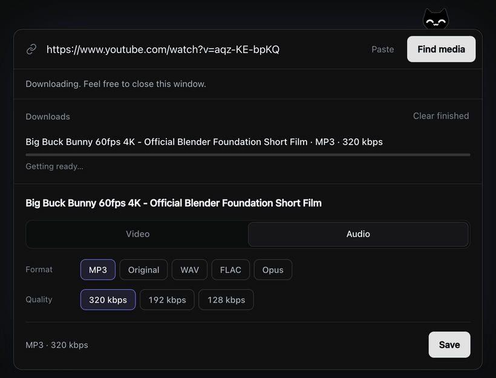

Save a link as
MP3 or MP4.
Paste a video link. Keep the video or just the soundtrack. Pawket runs on your computer, with no account required.

Which download do I need?
Windows 10 or 11, Intel or AMD 64-bit. Open the installer and choose Finish. Later, open Pawket from the Start menu.
Apple silicon Mac, macOS 14 or later. Open the ZIP and double-click Pawket. Both desktop downloads include FFmpeg, yt-dlp and Deno.
How do I save a video or just its audio?
- Copy a public video link, such as a YouTube Short or Instagram Reel.
- Paste it into Pawket and click Find media.
- Choose Video for MP4 or Audio → MP3 for the soundtrack, then click Save.
Look in your browser’s Downloads list for the finished file. Some posts require login or have no audio track. DRM-protected media and live streams are unsupported.
How has Pawket been tested?
The Windows installer test installs Pawket on a clean GitHub-hosted Windows runner, opens it from the Start menu, downloads a public sample as MP3 and MP4, and decodes both files with FFmpeg.
See the Windows test run · Read the verification notesCan I automate downloads?
The same engine is available through a command-line interface, a local HTTP API and an MCP server for agents. The project provides a Chrome extension as well.
Read the developer guide · HTTP API